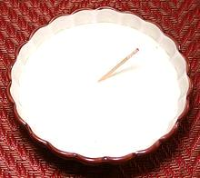

 |
Béchamel SauceFrance - Sauce Béchamel Italy Besciamella | ||||
| Makes: Effort: Sched: DoAhead: |
2 cups ** 25 min Yes |
In France, this important sauce is credited to Louis de Béchamel, maitre d'hôtel to Louis XIV, but it had already long been used in Italy under the name Balsamella, now spelled Besciamella. | |||
|
2-1/2 4 6 1/3 1/4 1/16 |
c T T t t t |
Milk Butter (3) Flour Salt Pepper, white Nutmeg |
There is disagreement as to how to keep it from getting lumps, see Note-1, and Note-2 on thickness. See Note-4 for sauces made from Béchamel. Make: - (25 min)
|